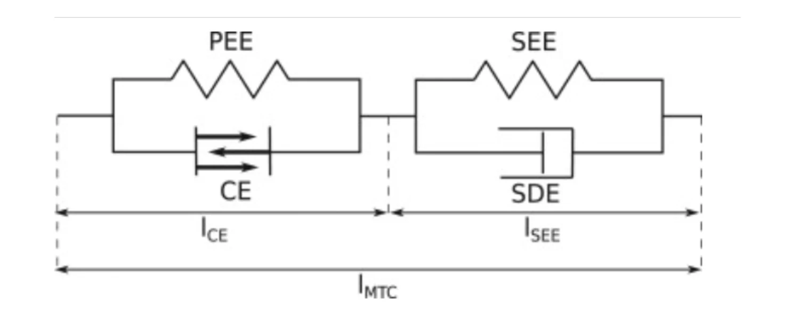
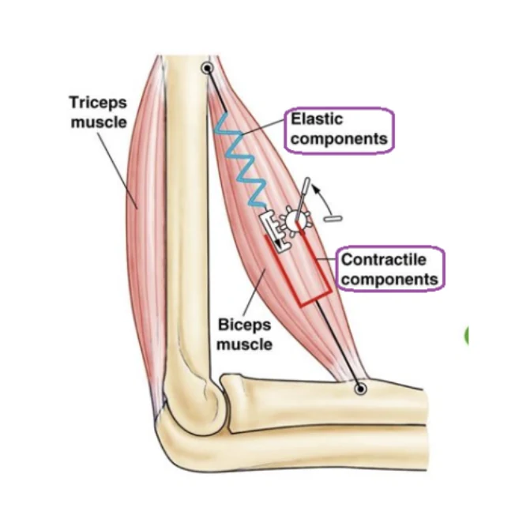
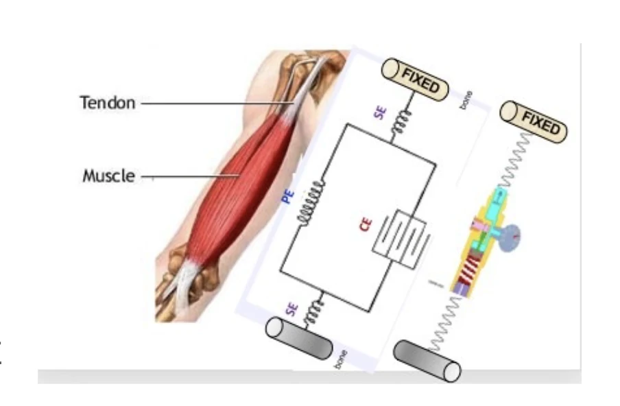
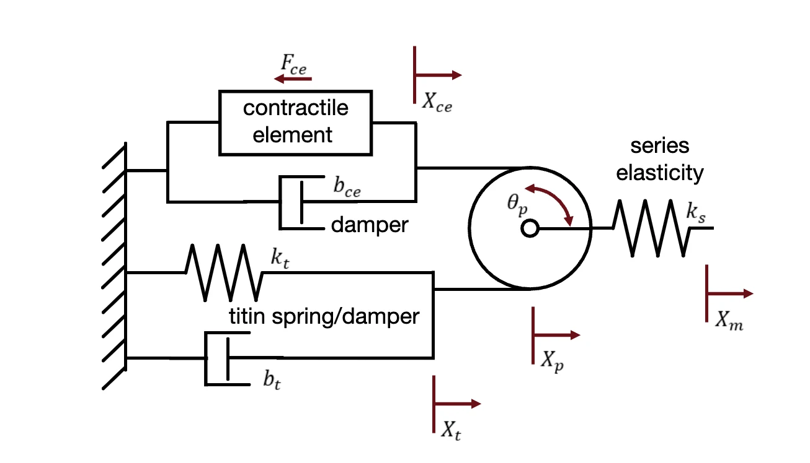
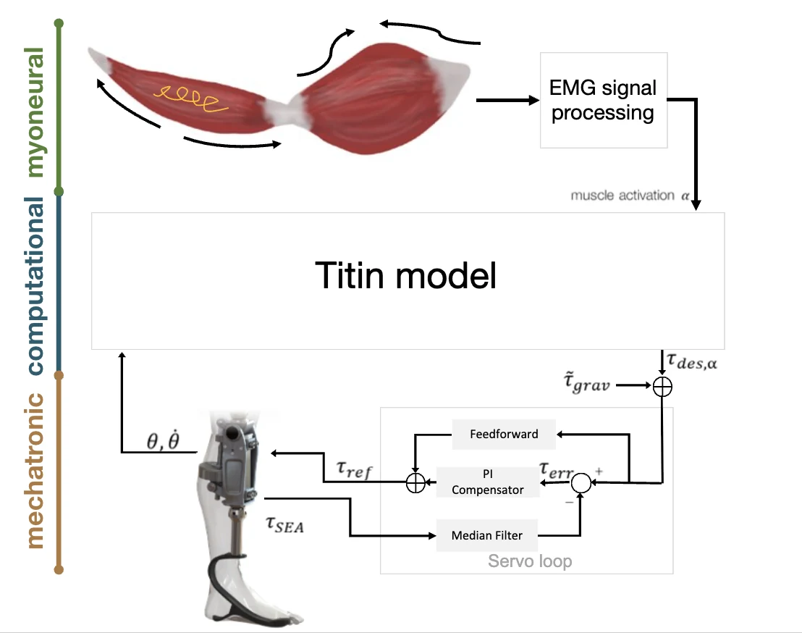

Selecting a realistic muscle-model baseline
Evaluating Hill-type lumped-parameter muscle models and recommending a baseline for comparison with titin-based research.

Hill-type muscle model architecture developed and diagrammed by Hannah Robin · Click image to enlarge
Research question
Our biomechatronics work needed a representative model of human muscle behavior as a baseline for comparison with a researcher’s titin-based model. An overly simplified Hill-type model would not adequately reflect both active contraction and the passive mechanical response of muscle.
My contribution
I reviewed Hill-type muscle formulations in the literature, focusing on which physical behaviors their lumped parameters could represent. I compared contractile, elastic, and damping components and made a recommendation for the baseline architecture. My role was literature evaluation and model selection, not physical prototyping or the development of the titin-based model.
Proposed architecture
I recommended placing the series elastic element (SEE) and series damping element (SDE) in parallel, with that branch connected in series to the parallel elastic element (PE) and contractile-element branch (CEE) in parallel. The goal was to provide a realistic starting representation of both active and passive behavior for later comparison.
Takeaway
I enjoyed the way this work asked me to connect mathematical abstractions to physiological behavior. It reinforced my interest in mechanical models that can contribute to prosthetic and biomedical technology.
Project imagery



